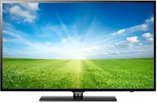

About
What is so special about a television you might ask? Well the television has been around since the 1920's and is still around today. Infact, it has been incorporated to many devices such as cellphones, and tablets that we use everyday. Obviously since technologies advance, the telivision has changed and developed over the years but it still holds its main purpose, to display an image on a screen. Televisions have become a very important part of our everyday lives.